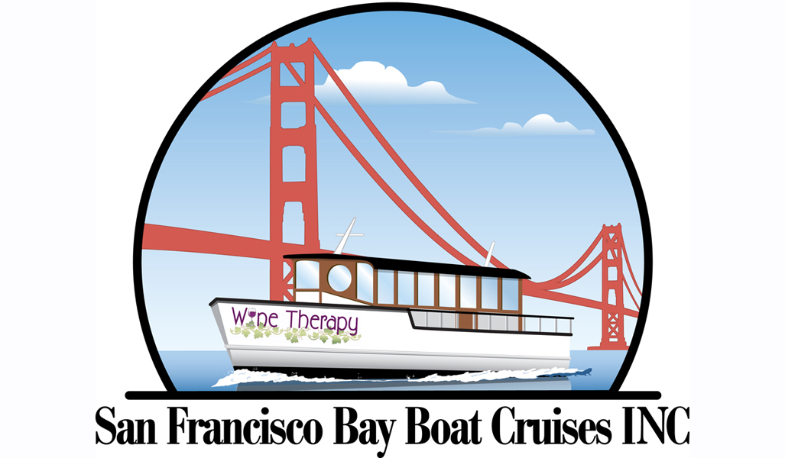
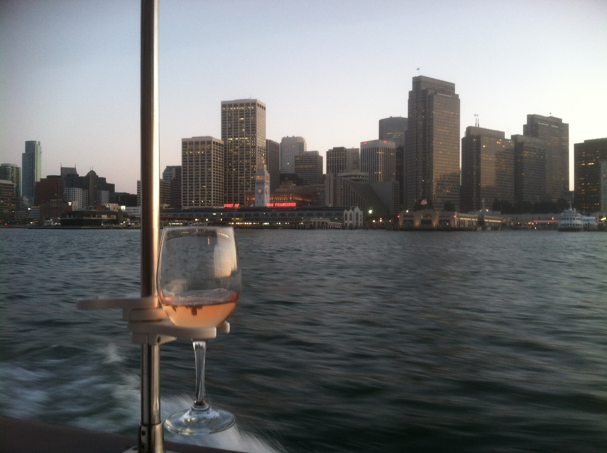
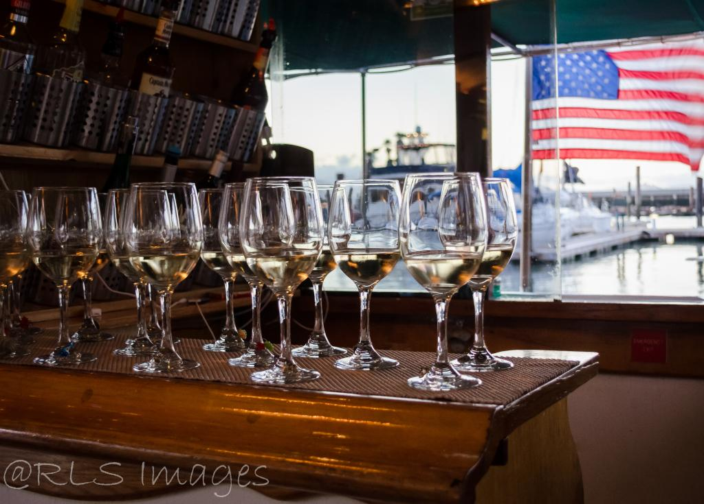

Visit 3 boutique wineries in the Napa or Sonoma Valleys with lunch included. You will get personal service and a behind the scenes experience.
The Wine Tasting Fun doesn’t stop there!! Board the Wine Therapy (pictured above) for a 1.5-2 hour SF Bay wine tasting cruise with Historical Narration.
This tour can be booked on separate days or all on the same day-your choice!!
All for $250 per person. This includes transportation, lunch and the San Francisco Bay Wine Cruise. Tasting fees at the wineries and gratuity are not included.
*We can accommodate up to 12 total passengers but a minimum of 4 total passengers is needed for the the tour to run on any given day. This does not mean you must have a group of 4 to book.